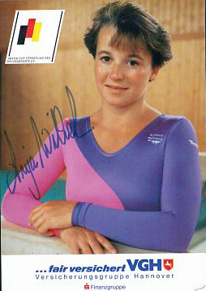

Anja Wilhelm (FRG)
1987 European B Bronze Medalist

Medal Total
European Championships: 1 Bronze
- Anja was born on September 26,
1968, in Wolfsburg.
Competition Results
- 1981
BP Honved-NTB Hannover Dual Meet: 1st AA
Intl. Junior Championships (Tokyo): 10th AA,
8th UB, 8th FX
Intl. Junior Championships (Sapporo): 3rd B
1982
- FRG-BUL Dual Meet: 2nd Team, 3rd AA
HUN-FRG Dual Meet: 1st Team, 3rd AA
HUN-SUI-FRG Meet: 1st Team, 1st AA
Jr. European Championships: 8th AA, 6th V
-
- 1983
- American Cup: 13th (prelims)
Blume Memorial: 4th AA
European Championships: 16th AA
- FRG-ROM Dual Meet: 2nd Team, 4th AA
- Gymnastics Hit Parade of Rome: 3rd B, 3rd FX
- Intl. Mixed Pairs: 12th Team
USA-FRG Dual Meet: 6th AA
World Championships: 8th Team, 23rd AA, 8th B
-
- 1984
- Brazil Cup: 1st AA
- DTB Cup: 5th AA, 3rd B, 4th V, 4th FX
- FRG-ROM-HUN Meet: 2nd Team, 4th AA
- FRG-BUL-SUI Meet: 2nd Team, 10th AA
- FRG Championships: 1st AA
- Olympic Games: 4th Team, 12th AA, 7th B
- 1985
- Blume Memorial: 5th AA
DTB Cup: 4th AA, 2nd B, 3rd UB, 5th V, 5th FX
- Cottbus International: 11th AA, 6th FX, 7th V
- European Championships: 23rd AA
FRG Championships: 1st AA
- Gander Memorial: 3rd AA
- Swiss Cup: 4th Team
- World Championships: 11th Team, 23rd AA
-
- 1986
- Ahoy Cup: 10th AA
Blume Memorial: 5th AA
DTB Cup: 2nd AA, 2nd V, 2nd UB, 2nd B
- FRG-BUL Dual Meet: 1st AA
- FRG-SUI Dual Meet: 1st Team, 1st AA
- FRG Championships: 1st AA
-
- 1987
- American Cup: 6th AA
- DTB Cup: 4th AA, 1st B, 3rd FX
- European Championships: 12th AA, 3rd B
- FRG-ROM Dual Meet: 2nd Team, 10th AA
- Intl. Mixed Pairs: 8th Team
- World Championships: 15th Team, 30th AA
-
- 1990
- FRG Championships: 1st AA, 1st V, 1st B, 3rd UB
-
- 1991
- University Games: 10th AA, 6th B
World Professional Championships: 2nd UB, 3rd B, 3rd FX
This page was last updated on October 18, 2000 and was last updated on February
28, 2021.
© Gymn Forum